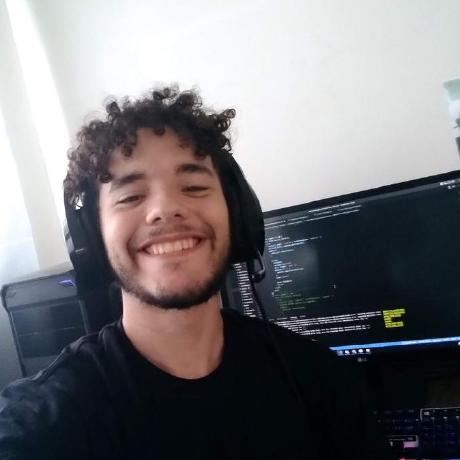

Software Engineer em João Pessoa, Brasil
Eu construo sistemas que conectam IA, produto e engenharia.
Sou Thauã Magalhães, desenvolvedor de software e estudante de Engenharia da Computação na UFPB. Transformo problemas complexos em produtos claros, confiáveis e prontos para uso real.
- RAG e agentes
- TypeScript
- React e Node.js
- Cloud e dados

Engenharia que sai do protótipo e chega à produção
focus
AI × Product
mode
build & ship
01 / SOBRE
Curiosidade técnica com responsabilidade de produto.
Minha trajetória começou no curso técnico em Informática do IFRN e ganhou novas camadas na Engenharia da Computação. Hoje trabalho entre software, inteligência artificial, dados e sistemas que precisam funcionar de verdade.
Na Sticky Games, participo da construção de uma plataforma de chat com IA capaz de receber texto, imagem e áudio, usar técnicas de RAG e gerar jogos em JavaScript. Também desenvolvo ferramentas de observabilidade, moderação e análise para apoiar decisões operacionais.
Gosto de projetos em que entender o problema é tão importante quanto escrever o código. Isso aparece no produto, na arquitetura e também nos meus experimentos com redes, computação gráfica, processamento de imagens, compressão e sistemas embarcados.
02 / EXPERIÊNCIA
Produtos, IA e operações em escala.
Experiência ponta a ponta, da descoberta do problema ao monitoramento em produção.
Software Engineer
Sticky GamesDesenvolvimento do principal produto da empresa, uma plataforma de chat com IA que integra múltiplos modelos, RAG e entradas multimodais para criar e publicar jogos.
- Mais de 100 mil conversas únicas processadas com interações contextualizadas.
- Dashboards em tempo real para métricas de negócio, transações e inconsistências de carteira.
- Moderação automatizada de usuários e conteúdo gerado com critérios de qualidade e conformidade.
TypeScriptReactNode.jsRAGLangGraphAWS
Full-stack Developer
AcelerabitConstrução e modernização de sistemas para operações de saúde, com foco em confiabilidade, integração entre serviços e redução de trabalho manual.
- Fluxo de validação que reduziu o processamento de dias para minutos.
- Redução de 50% na rejeição de solicitações enviadas a planos de saúde.
- Introdução de testes de integração e correção de vulnerabilidades em sistemas legados.
ReactNode.jsSQLTestesDocker
03 / PROJETOS
Construindo para aprender, operar e compartilhar.
PROJETO 01
Valhalla
Gerenciador open source e offline-first para torneios da Olimpíada Brasileira de Robótica. Organiza equipes, arenas, notas, fórmulas e ranking em tempo real dentro de uma rede local.
Next.jstRPCPrismaDocker
Ver no GitHub ↗
PROJETO 02
RDT Lab
Laboratório visual para protocolos de transferência confiável sobre UDP, com pacotes em tempo real, perda, corrupção, replay e comparação de desempenho.
TypeScriptWebSocketUDPSQLite
Ver no GitHub ↗
PROJETO 03
Codex Account Profiles
Extensão publicada no VS Code Marketplace para alternar perfis autorizados do Codex, acompanhar limites e manter conversas e sessões compartilhadas.
VS Code APITypeScriptDeveloper Tools
PROJETO 04
Aquário UFPB
Plataforma open source que centraliza guias, laboratórios, mapas e oportunidades do Centro de Informática da UFPB.
Next.jsPostgreSQLPrismaTestes
EMBARCADOS
Computador de bordo
Firmware e placa-portadora compacta para RP2040 e sensor BMP180, com leitura não bloqueante por I²C e evolução planejada para telemetria e paraquedas.
Ver projeto ↗ALGORITMOS
Compressor PPMC
Implementação de Prediction by Partial Matching com codificação aritmética, compressão, descompressão e experimentos sobre o corpus Silesia.
Ver projeto ↗04 / POSSIBILIDADES
O que posso construir com você.
Da primeira hipótese ao sistema em produção, com decisões técnicas conectadas ao objetivo do produto.
Produtos com IA
Assistentes, busca semântica, RAG, agentes, fluxos multimodais e ferramentas internas baseadas em conhecimento.
- LangChain e LangGraph
- Qdrant, FAISS e Elasticsearch
- Avaliação, moderação e observabilidade
Plataformas full-stack
SaaS, painéis administrativos, sistemas operacionais e experiências web responsivas com arquitetura sustentável.
- React, Next.js e Node.js
- PostgreSQL, MongoDB e Redis
- APIs, autenticação e testes
Dados e operações
Dashboards, detecção de inconsistências, métricas de negócio e automações que tornam operações mais visíveis.
- Grafana e Sentry
- Pipelines e integrações
- Monitoramento em tempo real
Protótipos de engenharia
Experimentos que aproximam software e mundo físico, de firmware e sensores a simulações interativas.
- C, C++ e Python
- RP2040, sensores e I²C
- Redes e computação gráfica
05 / FORMAÇÃO E RECONHECIMENTO
Engenharia, matemática e educação tecnológica.
A base acadêmica amplia meu repertório para pensar software além da interface. Algoritmos, arquitetura, redes, eletrônica e matemática se encontram nos projetos que escolho desenvolver.
Engenharia da Computação
Universidade Federal da Paraíba, UFPB
Técnico em Informática
Instituto Federal do Rio Grande do Norte, IFRN
Juiz da Olimpíada Brasileira de Robótica
Etapas regionais e estaduais em João Pessoa
Medalha de bronze na OBMEP
Participante dos programas PIC e PICME do IMPA
06 / FERRAMENTAS
Um repertório amplo, sem perder o foco.
Linguagens
TypeScript, JavaScript, Python, SQL, C e C++
Produto web
React, Next.js, Node.js, NestJS, tRPC e APIs
IA e dados
LangChain, LangGraph, Qdrant, FAISS, Elasticsearch e Pandas
Infraestrutura
Docker, AWS, Firebase, Grafana, Sentry e GitHub Actions
Bancos de dados
PostgreSQL, MySQL, MongoDB, Redis, SQLite e Prisma
Idiomas
Português nativo, inglês fluente e espanhol intermediário
07 / CONTATO
Tem um problema interessante para resolver?
Posso ajudar a transformar uma ideia, processo ou desafio técnico em um produto que as pessoas realmente consigam usar.
thauanlucascpl@gmail.com